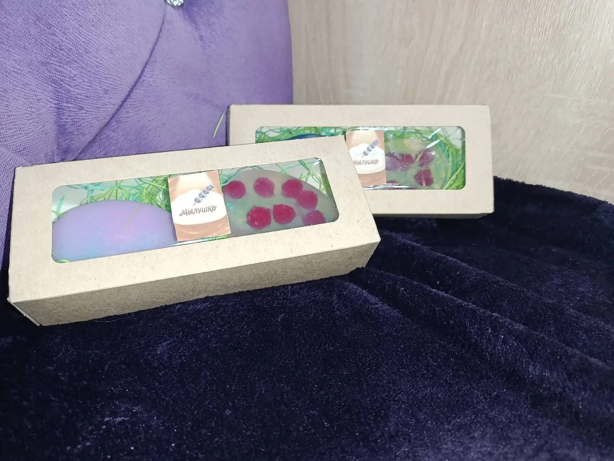
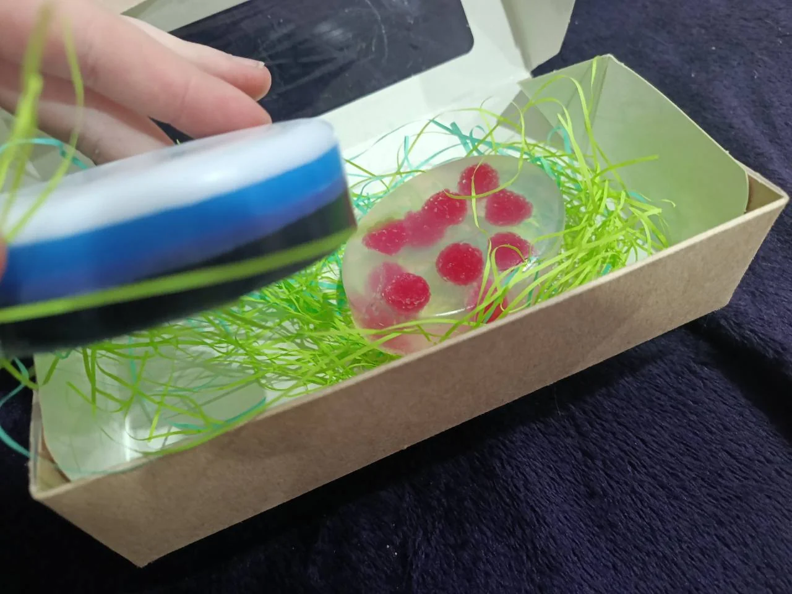

Кофейное
150 ₽ / шт.Маленький кофейный подарок себе или близким. Цена указана за одно мыло.
Маленькая мыльная мастерская
С ягодками, нежными слоями и капелькой волшебства. Делаю мыло своими руками — для ваших маленьких радостей и тёплых подарков.
Каждое — немножко особенное

С чего начнётся ваше Мылушко?
Мои первые работы и новые маленькие радости.
Цвет и вариант обсудим в сообщениях.
Маленький кофейный подарок себе или близким. Цена указана за одно мыло.
Праздничные формы в бело-голубых цветах. Цена указана за одно мыло.
Маленькие ягодки в прозрачном мыле. Так и хочется рассмотреть каждую!
Разные цвета, мягкие переливы и каждый раз своё маленькое сочетание.
Маленький знак внимания для близкого человека. Или подарок себе.
Ещё можно выбрать
Новогоднее мыло уже в коллекции. Другие новинки покажу в группе!
Маленькая приятность от меня
При покупке 5 мыл шестое подарю вам. Пусть хорошего будет чуть больше!

За каждым мылом — я
Привет! Я учусь в пятом классе и делаю мыло своими руками. Придумываю цвета, пробую разные формы и очень радуюсь, когда всё получается.
«Мылушко» — моё маленькое дело. Здесь ещё нет огромного каталога, зато есть мои первые работы и желание делать красиво. Спасибо, что заглянули!
Заглянуть в мою группуВсё начинается с «привет»
Напишите, какое мыло понравилось.
Обсудим цвета, состав набора и как передать заказ.
Не открылись сообщения? Перейти в группу